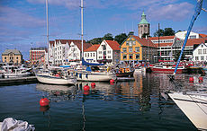
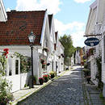

Ставангер Ставангер – это четвертый по величине город Норвегии. Он расположен на юго-западном побережье страны и насчитывает более 110.000 жителей. Это – центр рыбной и нефтяной промышленности, судостроения и перевозок. Северное море играет важную роль в жизни города. В прошлом столетии в Ставангере была сконцентрирована в основном рыбоконсервная промышленность, а сейчас город превратился в нефтяную столицу страны. Город Ставангер был основан в 1125 году , когда в нем проживало не более 2000 жителей. Когда началась массовая добыча сардины в 1900 году, население стремительно выросло до 30 000 жителей и сардинная промышленность оставалась. главной отраслью вплоть до Второй мировой войны.
У Ставангера интересная история и своя современная жизнь. Ставангер является современным городом, сумевшим сохранить свое прошлое. Большинство деревянных норвежских городов были разорены крупными пожарами, но Ставангера это не коснулось. Городские власти отреставрировали старый квартал, где основной достопримечательностью является кафедральный собор 12 века. В 1969 году в Северном море были открыты большие запасы нефти и Ставангер экономически вырос. Сейчас он составляет серьезную конкуренцию Тромсе в активной ночной жизни, но при этом Ставангер - город безопасный, где уровень преступности весьма и весьма низок.